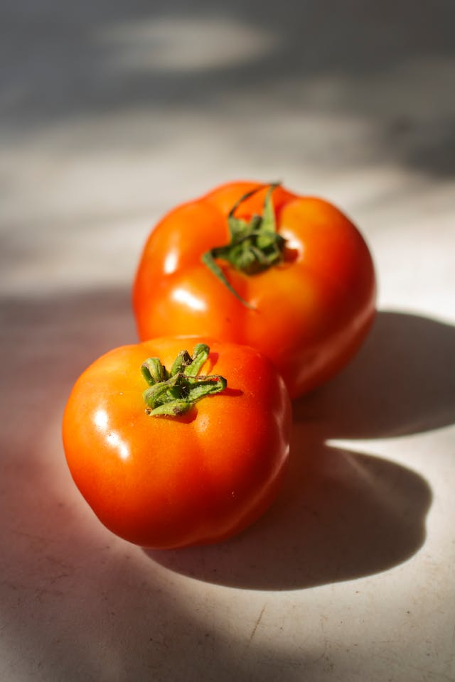
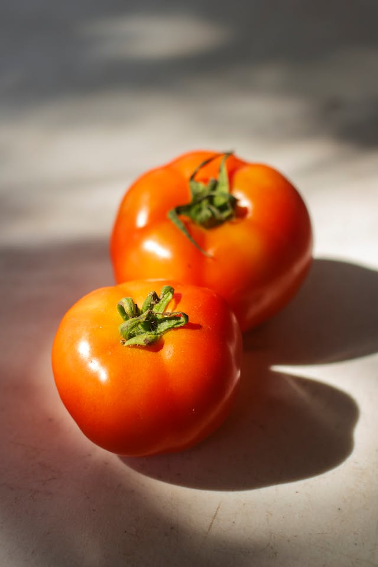

POMODORO
POMODORO
Reseña: Inspirado en el rock moderno con toques de punk, el álbum es una declaración de principios de la banda, donde expresan su amor por la música y las raíces que los unen. Cada canción es como una receta donde la paciencia se mezcla con energía explosiva.
Reseña: Este segundo álbum marca un cambio en el sonido de la banda, con ritmos más variados punk. Es un homenaje a los tiempos difíciles y a la idea de que las mejores cosechas vienen tras el esfuerzo. Las canciones reflejan una mezcla de punk y rock, llenas de capas sonoras e instrumentales.
Reseña: En su tercer álbum, la banda toma una dirección fresca y experimental al fusionar rock con funk y groove. Con letras más desenfadadas y un ritmo bailable, "Eres mi medio tomate" es el disco más enérgico de la banda. Este álbum celebra la diversión y el estilo de vida relajado de la banda, con un sonido que invita a bailar y a olvidarse de las preocupaciones.
 
